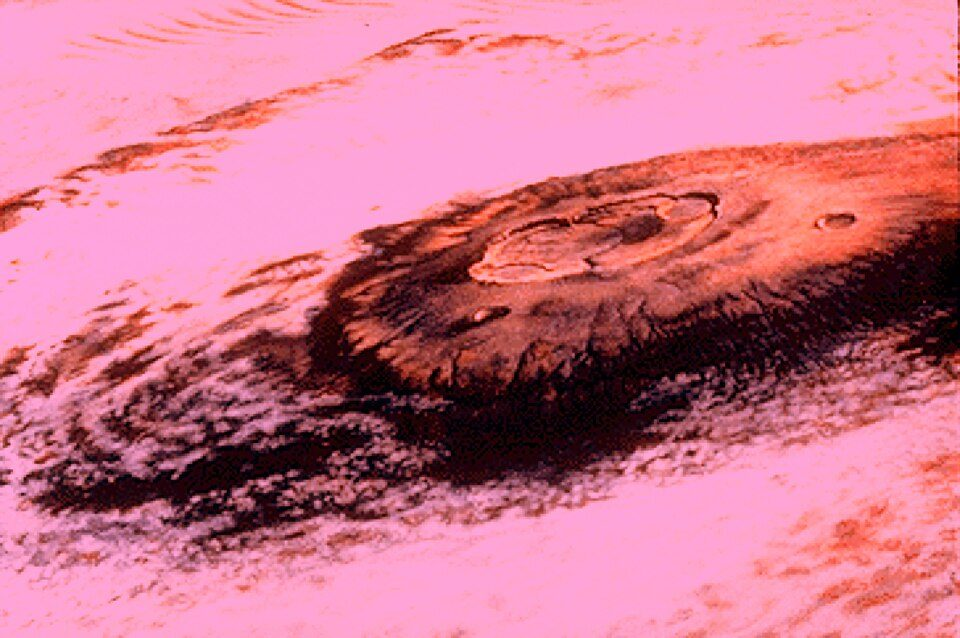

Mars
The red planet: rusty deserts, the largest volcano in the solar system and traces of rivers that flowed billions of years ago.


Mars is the fourth planet from the Sun and the most explored after Earth. Its reddish colour, which led ancient peoples to link it with blood and war, comes from the iron oxide covering its surface: Mars is literally rusty.
A cold, dry world
Mars is half Earth's diameter and has a very thin carbon dioxide atmosphere, with less than 1% of our surface pressure. The average temperature is around −60 °C, although at the equator on a summer day it can reach 20 °C at noon. Its days are very similar to ours: they last 24 hours and 37 minutes, and scientists call them sols.
Its axis is tilted 25 degrees, almost like Earth's, so Mars has seasons too, although they last twice as long because its year is 687 days. Every so often, the wind raises dust storms that can cover the entire planet for weeks.
Geological records
- Olympus Mons is the largest volcano in the solar system: about 22 km high, nearly three times Everest, with a base the size of Poland.
- Valles Marineris is a canyon system 4,000 km long and up to 7 km deep. On Earth it would stretch from Lisbon to Moscow.
- The polar caps are water ice covered in winter by a layer of dry ice (frozen carbon dioxide).


Mars once had water
Spacecraft have found dry riverbeds, deltas, ancient lakes and minerals that only form in water. More than 3 billion years ago Mars was warmer and wetter, and it may have had an ocean in its northern hemisphere. As its interior cooled it lost its magnetic field, and the solar wind gradually stripped away the atmosphere. Today plenty of water remains, but frozen underground and at the poles.
Robots on Mars
Since the Viking landers arrived in 1976, a fleet of robots has roamed the planet. Curiosity has been exploring Gale crater since 2012 and showed that it once held a habitable lake. Perseverance landed in 2021 in Jezero crater, an ancient delta, and is storing rock samples in tubes to bring back to Earth one day. It carried Ingenuity, the first helicopter to fly on another planet: it made 72 flights when only five were planned. China has also landed its Zhurong rover there.


Was there life?
It is one of the great questions in science. In 2024, Perseverance found "leopard spot" markings in a rock called Cheyava Falls that, on Earth, are often associated with microbes. It is not proof of life, but it is one of the most promising clues so far.
Two moons
Mars has two small, irregular moons, Phobos and Deimos (fear and dread), probably captured asteroids. Phobos is slowly spiralling inwards and in about 50 million years it will break into a ring or crash into the planet.
Videos to understand it better
- How does a Mars Rover work? (Perseverance)Jared Owen · 6.3M views
- Mars 101 | National GeographicNational Geographic · 4.7M views
Videos are from YouTube and belong to their creators. They only load when you click them. See all videos →